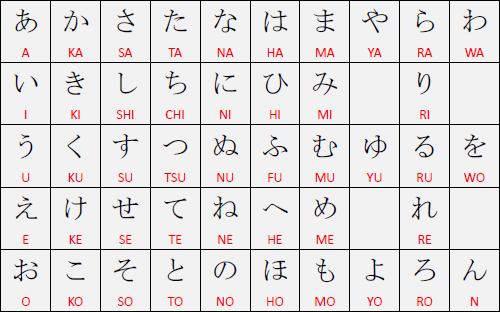
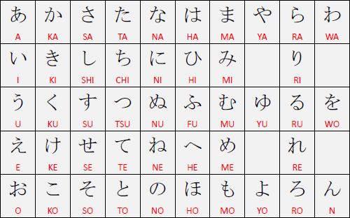

<- clique em mim para voltar para a página inicial
<- clique em mim para voltar para a página inicial

Japonês é uma lingua que usa principalmente a aglutinação de caracteres para a vocalização e escrita. Dessa forma, cada silaba falada na lingua, se torna uma unica "letra". Um bom exemplo é o famoso "bom dia", dito em japonês como "Ohayou" e escrito "おはよう".
O interesante do japonês também é a alta quantidade de sufixos que podem ser empregados para dar ênfase em uma frase, como por exemplo "Yarou" (de escrita "野郎", ou também "やろ", depende muito do contexto). "yarou" pode ser ultilizado no final de algumas frases para dar uma ênfase agressiva na frase, como por exemplo "Bakayarou" que é uma forma mais agressiva de chamar de idiota, sendo traduziada como "Estúpido". No japonêsm pode-se também ter duas palavras que, se traduzidas, significam a mesma coisa, porém tem significados diferentes. Um belo exemplo é o famoso "Kakattekoi" (escrito como "かかってこい", e traduzido como "Vem pra cima", "pode vir"), que é usado em uma briga de buteco por exemplo, para provocar o adversário. Porém, seu irmão "Kite" (escrito "来て" e sendo traduzido como "Vir" ou "venha" dependendo do contexto inserido) também tem o mesmo significado, mas é usado de uma maneira formal, no dia-a-dia.
Uma caracteristica curiosa do japônes é também a quantidade de sistemas de escrita aos quais são associados a ele, sendo juntos 5, 4 de escrita e 1 de númeração. Os alfabetos são: Romanji, Kanji, Katakana e Hiragana. O sistema de numeração principal presente no japonês são os números arábicos. Vamos ver as peculiaridades de cada um?
⠀⠀⠀⠀São os caracteres usados para a transcrição dos demais alfabetos para algo "legível" aos estrangeiros, e tem como principal caracteris a escrita com caracteres do alfabeto latino. Foi criado quando os japoneses tiveram seus primeiros contatos com os navegadores portuguêses. São usados em acrônimos, nomes de extrangeiros e nomes de empresas, que necessitam de serem lidas tanto no japão quanto em outro país.
⠀⠀⠀⠀São caracteres de origem chinesa, e sua pricipal característica é ser usado para a refpresentação de idéias. Como por exemplo:
⠀⠀⠀⠀Os kanjis, em uma escrita feita digitalmente, podem ser inseridos pelo teclado com uma espécie de auto-corretor.
⠀⠀⠀⠀Katakana é o alfabeto usado exclusivamente para palavras estrangeiras que foram colocadas no dialeto japonês. Pode ser usado na escritura de nomes cientificos de espécies, onomatopeias, como uma alternativa de destaque (Ao invés de escrever em negrito ou itálico). Os sons das "letras" desse alfabeto são idênticos ao do Hiragana, por exemplo, "すべて良い" e "スベテヨイ" tem o mesmo som. (Ambos se lêem "Subete yoi", e ambos significam "Tudo certo")
⠀⠀⠀⠀Como no japonês não existe espaço entre os caracteres, a barra de espaço age como uma cahve que alterna entre o Katakanae o Hiragana, como pode-se ver na imagem a baixo:

⠀⠀⠀⠀Os sistemas japoneses tambem usam um softwere muito interessante, que permite o usuário escrever em Romanji, e com a barra de espaço, escolher se a escrita ficará em Katakana ou em Hiragana. Você pode conferir um artigo sobre o assunto aqui.
⠀⠀⠀⠀É o alfabeto padrão do japônes, e nele se aplica todos as outras características já faladas nesta página. É mais usado em situações nas quais a palavra não tem Kanji, não tem Katakana e/ou por hábito do escritor.
Confira agora algumas tabelas dos alfabetos em Katakana e em Hiragana:
 ⠀⠀⠀⠀
⠀⠀⠀⠀